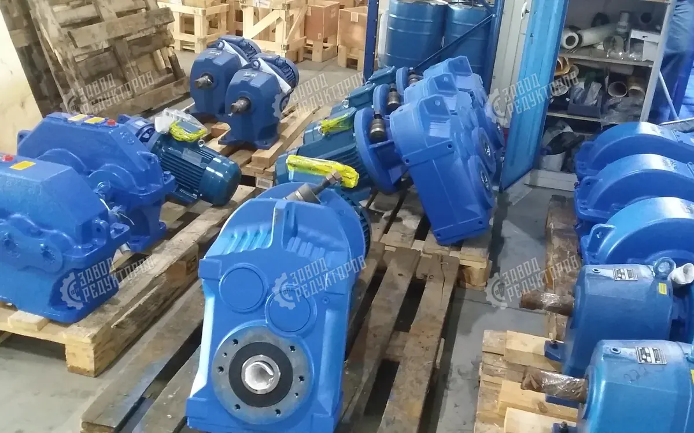
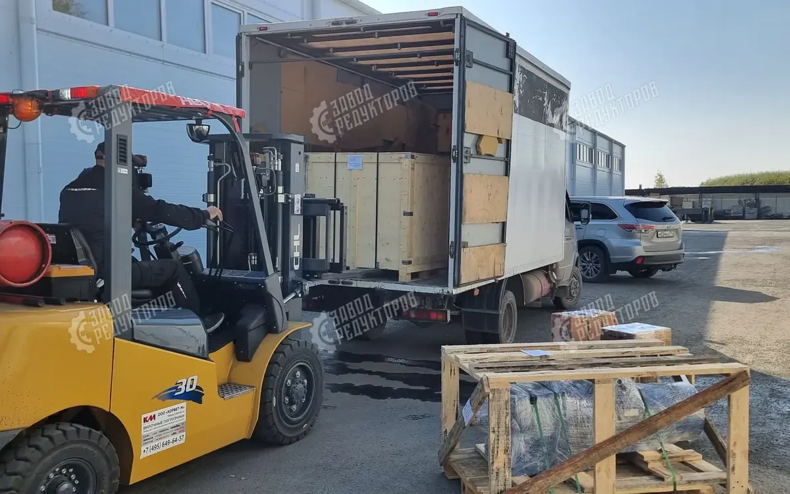

Выбор приводной техники — всегда баланс между стоимостью и надёжностью. На практике ошибки в подборе или попытки сэкономить на «восстановленном» оборудовании часто дают обратный эффект: бесконечные ремонты, срывы планов и убытки от простоев. Разберём три главные ошибки при выборе редукторов и покажем, как современное российское производство решает задачи, которые раньше казались невыполнимыми.

Ошибка 1. Подбор только по базовым параметрам
Многие считают, что для выбора достаточно знать мощность двигателя и крутящий момент. Но редуктор — это не просто «железка», а элемент, работающий в конкретной среде.
Что важно учитывать на самом деле:
- Режим эксплуатации. Работа 24/7 требует иных запасов прочности, чем периодические пуски.
- Условия среды. Температурные перепады, влажность, пыль, агрессивные среды.
- Цикличность. Частота пусков и остановов напрямую влияет на ресурс зубчатых передач.
Ошибка 2. Покупка восстановленного оборудования
Предложение купить «восстановленный» редуктор (часто советской серии) со скидкой 20–30% выглядит заманчиво. Но за низкой ценой нередко скрываются:
- использование неликвидных деталей и металлолома;
- отсутствие контроля термообработки и точности сборки (кустарное производство);
- непредсказуемый ресурс — такие узлы могут выходить из строя 2–3 раза в год.
Экономия при покупке полностью «съедается» затратами на ремонты и потерями от внеплановых остановок уже в первый год.
Ошибка 3. Страх перед заменой импортного оборудования
Когда на линии стоит редкий или импортный редуктор (например, SEW-EURODRIVE или NORD), предприятия часто выбирают путь «бесконечного ремонта» из-за двух страхов: «новый редуктор не подойдёт к нашему валу или фланцу» и «оригинал придётся ждать полгода».

Реальный кейс: 3 дня вместо 6 месяцев ожидания
Ситуация. На предприятии вышел из строя редуктор на конвейере. Установленное оборудование — премиальный бренд SEW-EURODRIVE, срок поставки оригинала — 6 месяцев. Для непрерывного производства такой простой означал огромные убытки.
Что сделали мы:
- провели технический аудит вышедшего из строя узла;
- разработали и изготовили аналог, полностью совместимый с существующей конструкцией;
- изготовили и доставили редуктор на предприятие всего за 3 дня.
Клиент получил работающее оборудование в разы быстрее, избежал многомесячного простоя и получил надёжное решение с гарантией.